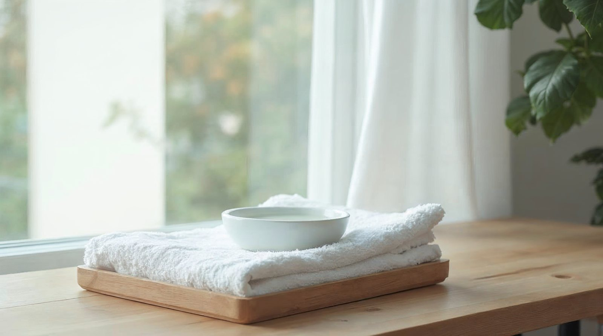
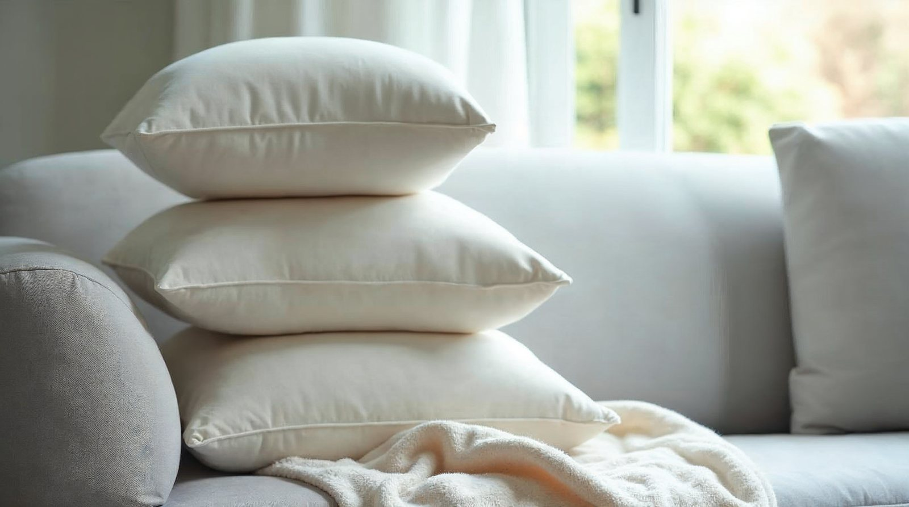
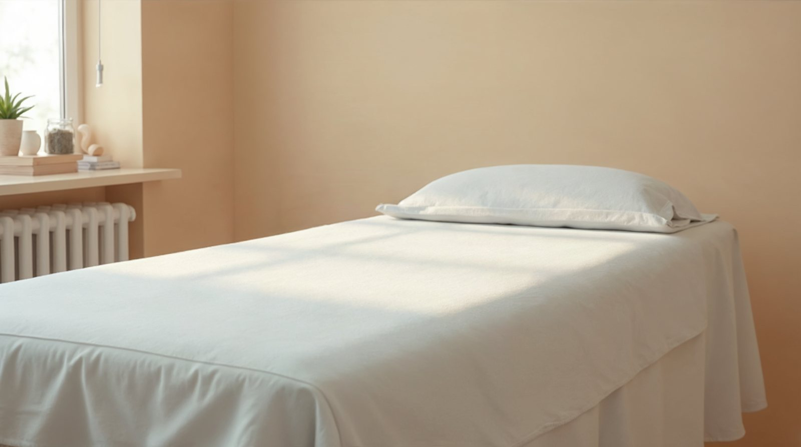
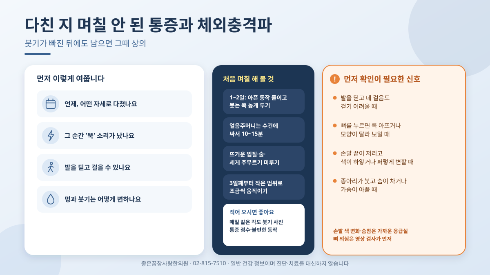

이종호 한의사 감수좋은꿈참사랑한의원 대표원장 (한의사 면허번호 19769)발행 2026-11-27 · 수정 2026-11-27
이 글의 차례
일요일 저녁, 동네 풋살장에서 공을 받으려고 몸을 트는 순간 발목이 안쪽으로 꺾였습니다. 그 자리에서는 절뚝이며 걸을 만했는데, 집에 와서 양말을 벗어 보니 바깥 복사뼈 아래가 달걀만 하게 부어 있습니다. 냉동실 얼음을 수건에 싸서 대고 누웠지만 머릿속은 내일 출근 생각뿐입니다. 밤새 휴대폰으로 이것저것 찾아보다가 체외충격파라는 말이 눈에 들어옵니다.
내일 바로 받으면 조금이라도 빨리 걸을 수 있지 않을까. 그렇게 아침 일찍 전화를 거시는 분들이 있습니다.
진료실에서도 이런 말씀을 자주 듣습니다. "원장님, 어제 다쳤는데 충격파 바로 받으면 안 될까요?" 다음 주에 등산 약속이 잡힌 분, 매장에서 하루 종일 서 있어야 하는 분, 아이를 안고 계단을 오르내려야 하는 분. 사정을 들어 보면 마음이 급한 게 당연합니다. 아픈 것도 아픈 거지만, 당장 내일 하루를 어떻게 버틸지가 더 걱정이시지요.
그 조급함, 저도 잘 압니다.
그래도 저는 다친 지 며칠 안 된 통증에는 체외충격파를 바로 정하지 않는 편입니다. 처음 며칠은 뼈나 인대가 크게 다치지 않았는지 확인하고, 붓기와 열감이 가라앉는 흐름을 지켜보는 일이 먼저이기 때문입니다. 체외충격파는 붓기가 빠진 뒤에도 같은 자리가 몇 주째 아프고, 특정 동작을 할 때마다 같은 지점이 아플 때 상의하는 경우가 많습니다.
그 사이의 시간을 어떻게 보내면 좋을지, 언제쯤 체외충격파 이야기를 꺼내는지 차근차근 말씀드리겠습니다.
다친 직후에는 왜 서두르지 않을까요
다치고 나서 처음 사나흘은 몸이 다친 자리를 스스로 정리하는 시기입니다. 피가 몰리고 붓고 뜨거워지는 것도 그 과정의 일부지요. 이때 아픈 곳은 넓게 퍼져 있습니다. 손가락 하나로 가장 아픈 곳을 짚어 보시라고 하면, 대부분 발목 전체를 손바닥으로 감싸십니다.
붓기가 빠지고 나서야 아픈 자리가 바깥 복사뼈 앞쪽 인대인지, 발등 쪽 힘줄인지 한 점으로 모이기 시작합니다. 체외충격파처럼 자리를 정해 에너지를 전달하는 방법은 그 한 점이 보일 때 판단하기가 한결 수월합니다.
뼈를 먼저 확인하는 이유도 있습니다. 발목을 접질렸는데 실은 복사뼈 끝이나 새끼발가락 쪽 발등뼈에 금이 간 경우가 있고, 손을 짚고 넘어졌는데 엄지 쪽 손목뼈가 다친 경우도 있습니다. 이 손목뼈는 처음 찍은 엑스레이에서 잘 드러나지 않아, 며칠 뒤 다시 찍어 보고서야 알게 되는 경우도 있다고 알려져 있습니다.
뼈가 다친 자리에 충격파를 더하는 일은 피해야 합니다. 체중을 싣기 어렵거나 뼈 위를 눌러 콕 집어 아프다면, 저는 영상 검사가 가능한 병원을 먼저 다녀오시라고 권합니다.
멍도 살핍니다. 멍이 아직 번지고 있다면 속에서 피가 다 멎지 않았다는 뜻일 수 있습니다. 혈액을 묽게 하는 약을 드시는 분이라면 더 그렇습니다. 이런 때 그 자리를 자극하면 멍과 붓기가 커질 수 있어서, 며칠 기다리며 멍의 색이 보라에서 누런빛으로 바뀌어 가는지를 먼저 봅니다.
하나 더 있습니다. 다친 직후의 통증은 대부분 시간이 지나며 가라앉는 흐름을 탑니다. 그 흐름을 지켜보지 않고 바로 장비부터 쓰면, 나중에 무엇이 도움이 되었고 무엇이 부담이 되었는지 가려내기 어려워집니다. 저는 그 흐름을 환자분과 같이 보고 싶습니다.

이런 분들을 자주 뵙습니다
주말에 운동을 하다 다친 직장인분들이 많습니다. 풋살이나 배드민턴을 하다 발목을 접질리고, 월요일 아침 붕대를 감은 채 오시지요. 이런 분께 저는 이번 주를 '가라앉히는 주'로 정하자고 말씀드립니다. 출근은 하시되 계단 대신 엘리베이터를 타고, 점심시간에는 발을 의자에 올려 두고, 퇴근 뒤에는 운동 대신 발을 높이 두고 쉬는 겁니다.
다음 주 이맘때 붓기가 얼마나 빠졌는지 보고 그다음을 이야기합니다.
겨울이면 빙판길이나 젖은 계단에서 넘어지며 손을 짚은 어르신들도 자주 뵙습니다. 손목이 부었는데도 뼈는 괜찮은 것 같다며 며칠 참다 오시는 분이 적지 않습니다. 엄지 쪽 손목의 오목하게 들어간 자리를 눌러 아프거나, 손목 모양이 달라 보이거나, 숟가락을 쥐기도 힘들다면 그날 바로 엑스레이부터 찍어 보시라고 말씀드립니다.
골다공증이 있다면 더 서둘러야 합니다.
테니스를 치다가, 혹은 산을 내려오다가 종아리에서 무언가 '툭' 하는 느낌과 함께 아파 오시는 분도 있습니다. 근육이 일부 찢어졌을 수 있는 경우라, 처음 며칠은 체중을 덜 싣고 붓기를 보며, 필요하면 초음파로 근육 속 모습을 살핍니다. 이때도 충격파는 서두르지 않습니다.
조금 다른 경우도 있습니다. 몇 달째 아침 첫걸음마다 발바닥이 아프던 분이 주말에 산을 다녀온 뒤 더 심해져서 오시는 경우입니다. 겉으로는 요즘 심해진 통증이지만, 실은 오래된 통증이 무리해서 도진 것에 가깝습니다.
이런 분께는 새로 다친 자리가 있는지부터 가려 보고, 붓고 뜨거운 기운이 있으면 며칠 가라앉힌 다음 원래 아프던 자리를 두고 체외충격파를 상의합니다.
아이를 안아 올리다 손목을 삐끗한 육아 중인 분들도 계십니다. 다친 지 며칠 안 되었는데도 아이는 계속 안아야 하니 쉬기가 참 어렵지요. 이런 분께는 손목을 덜 쓰는 방법부터 같이 찾습니다. 아이를 안을 때 손목을 꺾어 받치지 말고 팔뚝 전체로 받치고, 수유 쿠션처럼 무게를 덜어 줄 물건을 곁에 두는 식입니다.
둘째를 준비 중이거나 임신 가능성이 있다면, 나중에 체외충격파를 상의할 때를 위해서라도 미리 말씀해 주세요.

처음 며칠, 그리고 그다음에 해 볼 것
다친 날부터 이틀 정도는 아픈 동작을 줄이는 것이 먼저입니다. 완전히 묶어 두라는 뜻은 아닙니다. 아프지 않은 범위에서 발가락이나 손가락을 꼼지락거려 피가 돌게 하고, 붓는 쪽은 누울 때 베개를 받쳐 심장보다 조금 높게 둡니다. 얼음주머니는 수건으로 감싸 한 번에 10~15분 정도 대고, 피부가 빨갛게 얼얼해지면 뗍니다.
붕대를 감았다면 발가락이나 손가락 끝의 색이 하얗거나 퍼렇게 변하지 않는지, 저리지 않는지 수시로 확인하세요.
이 시기에 미뤄 두셨으면 하는 것도 있습니다. 뜨거운 찜질과 사우나, 술, 그리고 아픈 자리를 세게 주무르는 일입니다. 모두 붓기를 키울 수 있어서 붓기와 열감이 가라앉을 때까지는 뒤로 미룹니다. 진통소염제를 드실지는 위장 상태와 드시는 약에 따라 달라지니 약사나 의사와 먼저 상의하세요.
사흘째 무렵부터는 조금씩 움직이는 쪽으로 넘어갑니다. 발목이라면 의자에 앉아 발끝으로 공중에 글자를 쓰듯 천천히 돌려 보고, 손목이라면 주먹을 살며시 쥐었다 펴기를 열 번쯤 해 봅니다. 걷기는 집 안에서 짧게 시작해, 다음 날 아침 통증이 늘지 않았으면 조금씩 거리를 늘립니다. 기준은 늘 다음 날 아침입니다.
전날 무리했다면 몸이 아침에 바로 알려 주거든요.
기록도 부탁드립니다. 매일 아침 같은 자리에서 같은 각도로 붓기 사진을 한 장 찍고, 0에서 10까지의 통증 점수와 가장 불편했던 동작 하나를 적어 두세요. 일주일 치가 모이면 붓기가 빠지는 속도와 아픈 자리가 한 점으로 모여 가는 모습이 보입니다. 체외충격파를 상의할 때가 되었는지 판단할 때 저는 이 기록을 많이 참고합니다.
스스로 이렇게 물어보셔도 좋습니다. 붓기는 어제보다 줄었나? 멍의 색이 바뀌어 가나? 가장 아픈 자리를 손가락 하나로 짚을 수 있게 되었나? 그런데도 몇 주째 같은 동작에서 같은 지점이 아픈가? 앞의 세 질문에 '예'가 늘어 가는데 마지막 질문에도 '예'라면, 그때가 체외충격파를 포함한 다음 방법을 이야기해 볼 때입니다.
얼마나 지켜보고, 언제 진료를 받을까요
가벼운 염좌라면 대개 며칠 사이 붓기가 줄기 시작하고, 1~2주에 걸쳐 걷기나 손 쓰기가 한결 편해지는 흐름을 탑니다. 이 흐름을 타고 있다면 생활을 조절하며 지켜보셔도 됩니다. 반대로 일주일이 지나도 붓기가 그대로이거나, 한동안 줄다가 다시 붓는다면 진료를 받아 보세요.
붓기와 열감은 빠졌는데 몇 주째 계단을 오를 때나 첫걸음, 물건을 쥘 때마다 같은 자리가 아프다면 그때 체외충격파를 포함해 방법을 상의합니다.
다음과 같은 신호가 있다면 기다리지 말고 정형외과나 응급실에서 먼저 확인을 받으세요.
- 다친 순간 '뚝' 소리와 함께 금세 크게 붓고, 발을 딛고 네 걸음도 걷기 어려운 경우
- 뼈 위를 눌렀을 때 한 점이 콕 집어 아프거나, 모양이 달라 보이는 경우
- 손끝이나 발끝이 저리고 감각이 둔하며, 색이 창백하거나 퍼렇게 변하는 경우
- 다친 자리가 날이 갈수록 더 붉고 뜨거워지며 열이 나는 경우
- 종아리가 붓고 단단해지며 누르면 아프고, 숨이 차거나 가슴이 아픈 경우
손발 끝의 색이 변하거나, 종아리가 부은 채 숨이 차고 가슴이 아프다면 지체하지 말고 가까운 응급실에서 바로 확인을 받으세요. 복용 중인 약은 처방한 의사와 상의 없이 줄이거나 끊지 않습니다.

좋은꿈참사랑한의원에 처음 오시면
처음 오시면 저는 다친 날의 장면부터 여쭙습니다. 언제, 어디서, 어떤 자세로 다쳤는지, 그 순간 소리가 났는지, 바로 걸을 수 있었는지요. 그 뒤로 붓기와 멍이 어떻게 변했는지, 병원에서 엑스레이를 찍었는지, 드시는 약은 무엇인지도 차례로 여쭙습니다.
그다음 양손을 올려 봐 달라고 말씀드리고 맥을 짚습니다. 다친 자리와 상관없어 보여도, 놀란 몸이 긴장해 있는지, 며칠 잠을 설쳐 지쳐 있는지가 맥에 함께 드러나곤 합니다. 필요하다고 판단되면 혀와 배도 살핍니다. 이어서 아픈 자리를 손으로 나누어 눌러 보고, 움직이는 범위와 힘을 반대쪽과 비교합니다.
인대나 힘줄 주변을 더 보아야 할 때는 초음파로 붓기와 주변 조직의 모습을 함께 확인합니다. 다만 뼈 속은 초음파로 보기 어려워서, 골절이 의심되면 엑스레이가 가능한 병원을 먼저 안내합니다.
처음 며칠은 침 치료 등으로 아픈 자리 주변의 긴장을 살피고, 집에서 지킬 일을 함께 정합니다. 붓기가 빠진 뒤에도 같은 자리가 남는다면 그때 체외충격파를 상의합니다. 원내에는 제우스와 한일티엠 체외충격파 장비가 있어, 아픈 자리의 깊이와 범위를 보고 어떤 장비와 세기를 쓸지 정하며, 받는 동안에도 느낌을 여쭈며 조절합니다.
임신 중이거나 그 가능성이 있는 분, 혈액을 묽게 하는 약을 드시는 분, 심장박동기처럼 몸에 넣은 기기가 있는 분, 최근 그 자리에 주사를 맞은 분은 꼭 미리 알려 주세요. 건강보험 적용 여부와 비용, 몇 번이나 받게 될지는 상태에 따라 달라 방문 전 전화로 확인해 주세요.
체외충격파를 하기로 한 날에는 먼저 가장 아픈 지점을 손가락으로 함께 짚어 위치를 정하고, 그 자리에 젤을 바른 뒤 시작합니다. 기계가 일정한 박자로 두드리는 동안 그 자리가 더 뚜렷하게 아프게 느껴지기도 하는데, 그 반응은 위치를 맞추는 참고일 뿐 세게 할수록 좋다는 뜻은 아닙니다. 참기 어렵다고 느끼시면 바로 말씀해 주세요.
강도와 위치를 다시 맞춥니다. 받은 뒤 하루 이틀은 그 자리가 뻐근할 수 있고, 그날은 그 부위를 세게 쓰는 운동을 쉬시는 편이 좋습니다. 붓기나 열감이 오히려 심해진다면 연락해 주세요.
오실 때는 아픈 곳을 걷어 올리기 편한 옷을 입고, 병원에서 받은 영상 결과나 소견서, 드시는 약 목록, 그리고 매일 찍어 둔 붓기 사진을 가져오시면 이야기가 훨씬 빨라집니다. 다시 오시면 그 사진과 점수를 이어서 보며 다음 단계를 정합니다.
마치며
다친 직후에는 하루가 일주일처럼 깁니다. 절뚝이며 출근하고, 계단 앞에서 한 번 더 숨을 고르고, 밤에는 욱신거림에 몇 번씩 깨기도 하지요. 그 답답한 마음에 무엇이든 빨리 해 보고 싶은 건 너무나 자연스럽습니다. 다만 처음 며칠을 잘 가라앉혀 두는 일이 그다음 판단을 훨씬 또렷하게 해 준다는 것만은 기억해 주셨으면 합니다.
오늘 저녁에는 붓는 쪽을 베개 위에 올려 두고, 내일 아침 같은 자리에서 사진 한 장을 찍어 보세요. 다음에 오시면 그 사진부터 함께 보면서, 아픈 자리가 어디로 모였는지 같이 짚어 보겠습니다.
함께 읽으면 좋은 글
- 체외충격파를 받기 전에 먼저 확인이 필요한 경우는 어떤 때인가요?
- 발목을 삐끗한 뒤 초음파로는 무엇을 확인하고 언제 병원 검사가 필요한가요?
- 체외충격파는 어떤 진료이고, 어떤 통증에 어떻게 사용하나요?

다친 직후에는 왜 서두르지 않을까요
- 다치고 나서 처음 사나흘은 몸이 다친 자리를 스스로 정리하는 시기입니다.
- 피가 몰리고 붓고 뜨거워지는 것도 그 과정의 일부지요.
이런 분들을 자주 뵙습니다
- 주말에 운동을 하다 다친 직장인분들이 많습니다.
- 풋살이나 배드민턴을 하다 발목을 접질리고, 월요일 아침 붕대를 감은 채 오시지요.
처음 며칠, 그리고 그다음에 해 볼 것
- 다친 날부터 이틀 정도는 아픈 동작을 줄이는 것이 먼저입니다.
- 완전히 묶어 두라는 뜻은 아닙니다.
얼마나 지켜보고, 언제 진료를 받을까요
- 다친 순간 '뚝' 소리와 함께 금세 크게 붓고, 발을 딛고 네 걸음도 걷기 어려운 경우
- 뼈 위를 눌렀을 때 한 점이 콕 집어 아프거나, 모양이 달라 보이는 경우
자주 묻는 질문
다친 다음 날 바로 체외충격파를 받으면 회복이 빨라지지 않나요?
다친 처음 며칠은 뼈와 인대 상태를 확인하고 붓기가 가라앉는 흐름을 보는 것이 먼저라 바로 정하지 않는 경우가 많습니다. 회복 속도는 사람과 부위에 따라 달라 미리 말씀드리기 어렵습니다.
그럼 체외충격파는 언제부터 상의하나요?
붓기와 열감이 빠졌는데도 같은 자리가 몇 주째 아프거나, 특정 동작에서 같은 지점이 계속 아플 때 상의하는 경우가 많습니다. 시기는 진찰 뒤 함께 정합니다.
다친 자리에 따뜻한 찜질을 해도 되나요?
붓고 화끈거리는 처음 하루 이틀은 수건으로 감싼 얼음주머니를 10~15분씩 대는 편이 편할 수 있습니다. 뜨거운 찜질과 사우나, 술, 세게 주무르기는 붓기가 가라앉을 때까지 미뤄 두세요.
오래 아프던 자리가 무리한 뒤 더 심해졌을 때도 기다려야 하나요?
새로 다친 것인지, 오래된 통증이 도진 것인지 먼저 나눠 봅니다. 도진 경우라도 붓고 뜨거운 기운이 있으면 며칠 가라앉힌 뒤 계획을 다시 정합니다.
체외충격파 비용이나 건강보험 적용은 어떻게 되나요?
부위와 상태에 따라 달라 글로 말씀드리기 어렵습니다. 방문 전 전화(02-815-7510)로 확인해 주세요.
좋은꿈참사랑한의원은 재진 때 지난번 이야기부터 이어서 여쭙니다. 진료시간과 예약은 오시는 길에서 확인하세요.
어디서 상담받을 수 있나요?
좋은꿈참사랑한의원은 서울 동작구 만양로2길 2 신성빌딩 3층·5층(서울 동작구 상도동, 7호선 상도역 3번 출구 근처)에 있습니다. 한의사 3명(이종호 대표원장, 조영기 수석진료원장, 정원영 진료원장)이 진료합니다. 진료시간은 평일 09:30~20:00(점심 13:00~14:00), 토·일·공휴일 09:30~15:00이며, 방문 전 전화로 확인을 권합니다. 예약은 네이버 예약, 카카오톡 상담, 전화 02-815-7510로 받습니다.
이 글은 일반적인 건강 정보이며 개인의 진단이나 치료를 대신하지 않습니다. 증상이 있거나 복용 중인 약이 있다면 진료를 통해 확인하세요. 치료 효과는 개인마다 다를 수 있습니다.
작성 기준: 일반적으로 알려져 있는 건강 정보를 참고해 정리했습니다(대표원장 감수). 증상 기록은 1~2주 동안 하루 1회, 비슷한 시간에 적어 오시면 지난 상태와 비교하기 쉽습니다.